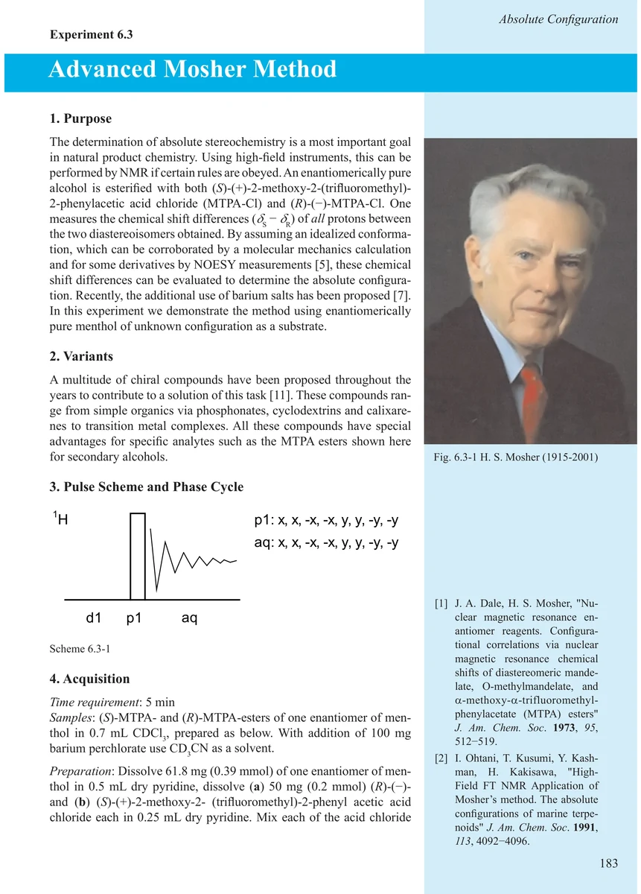
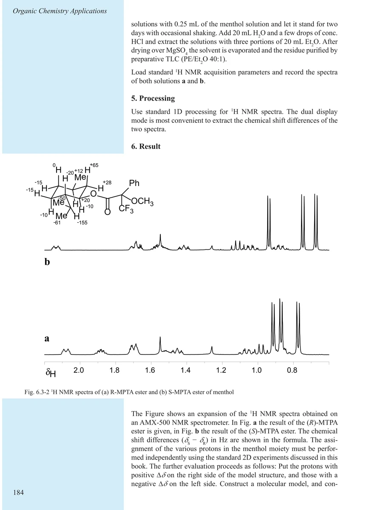
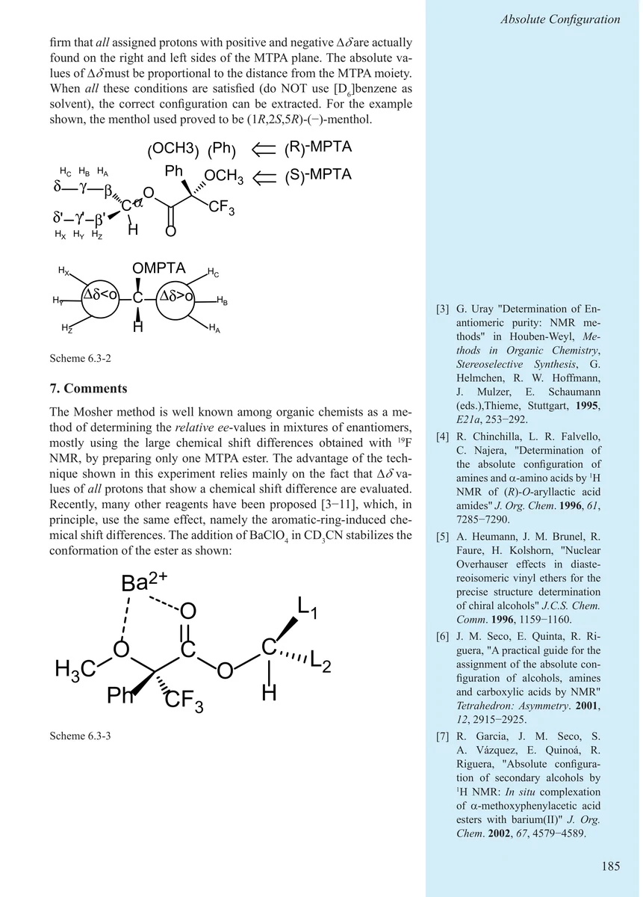
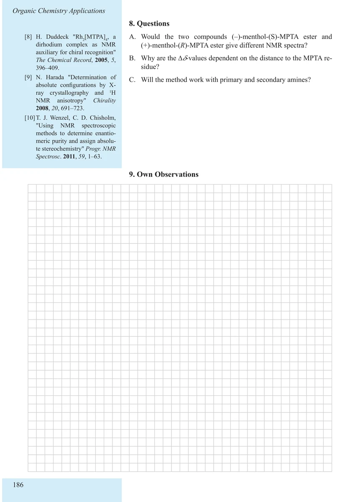

Item 6.3
Advanced Mosher Method
高级 Mosher 法
PDF 193–196 · 原书 183–186 · Organic Chemistry Applications




核磁共振实验方法、脉冲序列与谱图实践
Item 6.3
高级 Mosher 法
PDF 193–196 · 原书 183–186 · Organic Chemistry Applications



